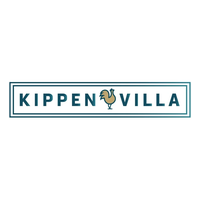

KippenvillaGesponsord
Kies je maat, je deur, een ren en de kleur van het beslag. Je ziet je hooiberg bij elke keuze live veranderen.
In 2 minuten klaar, en je prijs krijg je direct.
▶ Video1
KIPPENVILLA.NLStel je eigen hooiberg samenJe prijs direct in beeld
Meer informatie